- Introduction and Acknowledgements.
- Module Description.
- Use Cases.
- Tutorials.
- Panels and their use.
- Similar Modules.
- References.
- Information for Developers.
Introduction and Acknowledgements
Title: SlicerPRISM
Author(s)/Contributor(s): Simon Drouin, Professor at École de technologie supérieure (ÉTS), Montréal, Tiphaine RICHARD, Student Intern at ÉTS.
License: slicer4
Acknowledgements:
Contact: Tiphaine RICHARD, tiphainejh@gmail.com
Module Description
This module is an implementation of the PRISM customizable volume rendering framework in 3D Slicer.
Use Cases
Tutorials
Rendering a volume
Open the "Data" section.

Select your volume in the comboBox.
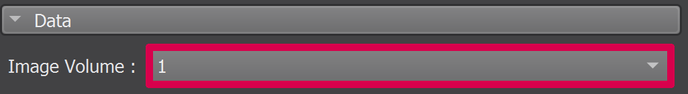
Open the "View Setup" section.

Apply the volume rendering to your volume by clicking on the "Volume Rendering" checkBox.
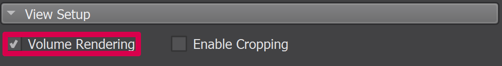
Applying a shader to a volume
- Render the volume.
Open the "Custom Shader" section.

- Select the shader of your choice in the comboBox.
- Adjust the different parameters.
If you are currently developping the shader you can click on the "..." button in order to reload, duplicate or open the shader :

- Reload the shader by clicking on the "Reload" button. This will reload all the new functionnalities added to the file containing the shader.
- Duplicate the shader by clicking on the "Duplicate" button. This will create a duplicate class of the class containing the shader.
- Open the shader by clicking on the "Open" button. This will open the class containing the shader in your favorite editor.

Modifying the ROI of a volume
- Render the volume.
Enable the cropping of the volume with the ROI by clicking on the "Enable Cropping" checkBox.

Display the ROI of the volume by clicking on the "Display ROI" checkBox.

You can scale and rotate the ROI :

Scale the ROI :
- Enable the scalling of the ROI by clicking on the "Enable Rotation" checkBox.
- Select one of the handle of the ROI and move it towards the center or the outside of the volume to scale the ROI.
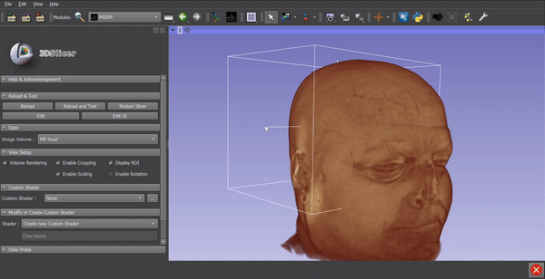
Rotate the ROI :
- Enable the rotation of the ROI by clicking on the "Enable Rotation" checkBox.
- Select one of the side of the ROI and move it in any direction to rotate the ROI.
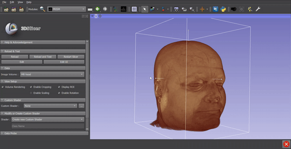
Creating a new shader
Open the "Modify or Create Custom Shader" section.

In the comboBox, select "Create new Custom Shader".

Type the name of the shader that will be used as a class name.

- Type the display name of the shader that will be used in the UI.
Click the "Create" button.

- You can either :
- Click on the "Edit" button and modify the python class manually.
Use the Add Code and Add Parameter tabs to modify the python class with the UI :
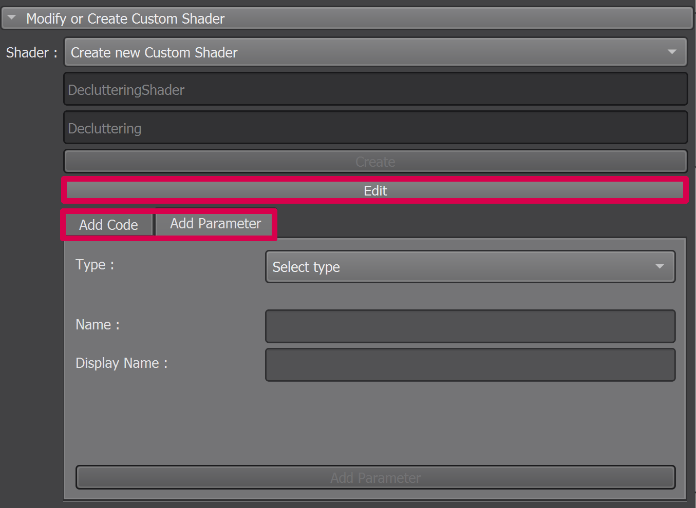
Modifying an existing shader
Open "Modify or Create Custom Shader" section.

In the comboBox, select the shader to modify.

Use the Add Code and Add Parameter tabs to modify the python class UI :
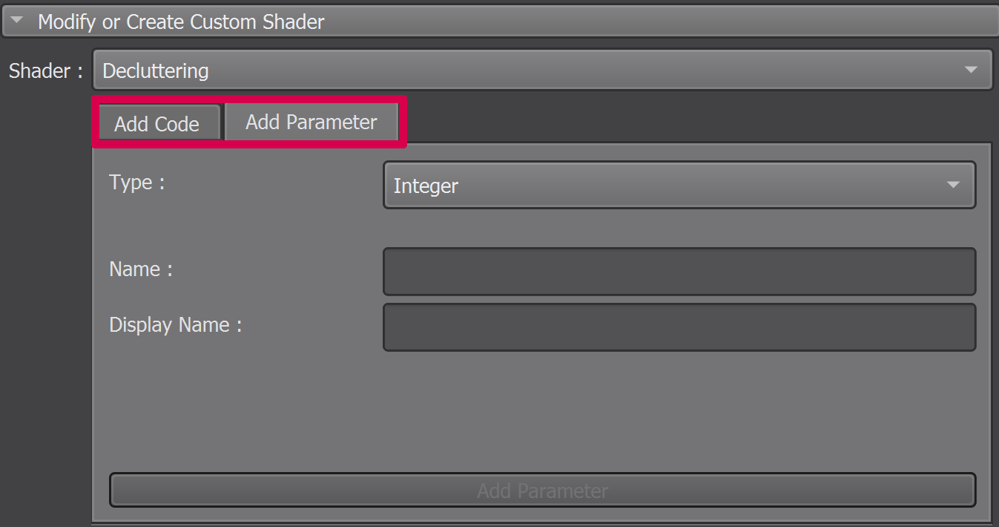
Adding a parameter to a shader from the UI
In the comboBox, select the type of the parameter to add to the shader.
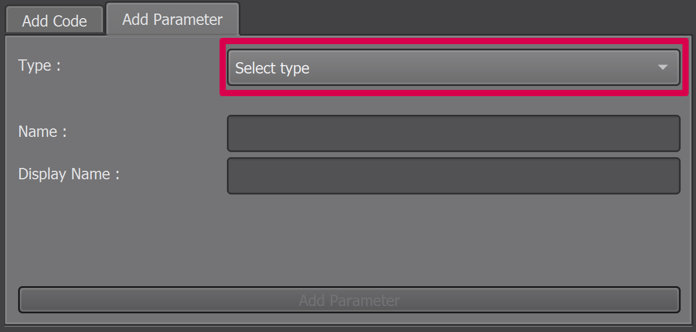
Type the name of the parameter that will be used inside the shader.
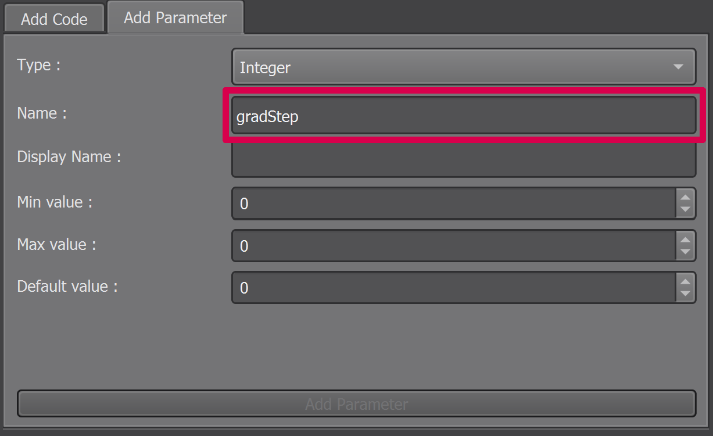
Type the display name of the parameter that will be used in the UI.

- Modify the values according to the parameter.
Click the "Add Parameter" button.

- Repeat steps 1-5 for each wanted parameter.
Adding code to a shader from the UI
In the first comboBox, select the tag type of the code to be added to the shader.
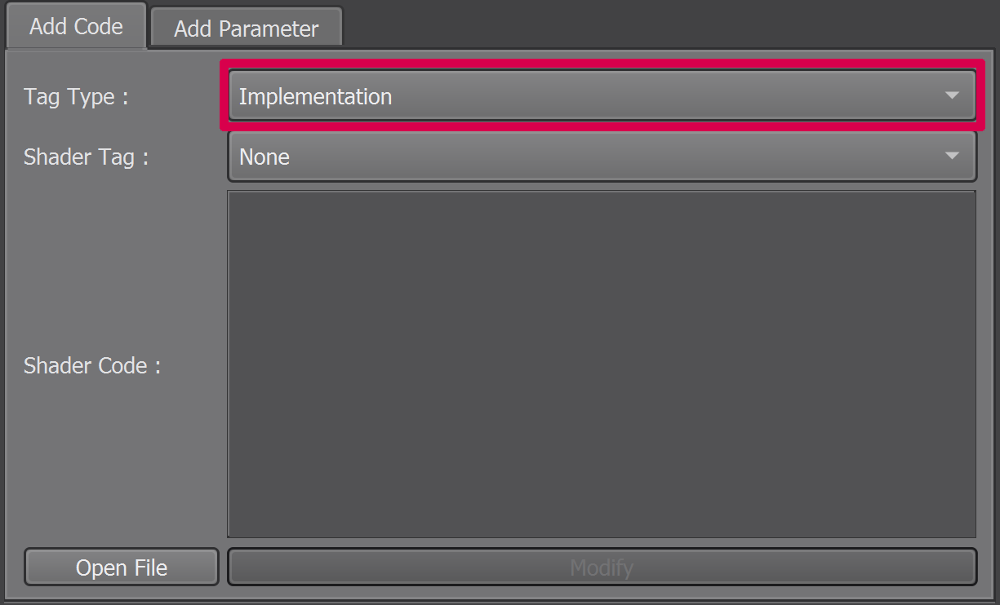
In the second comboBox, select the tag of the code to be added to the shader.
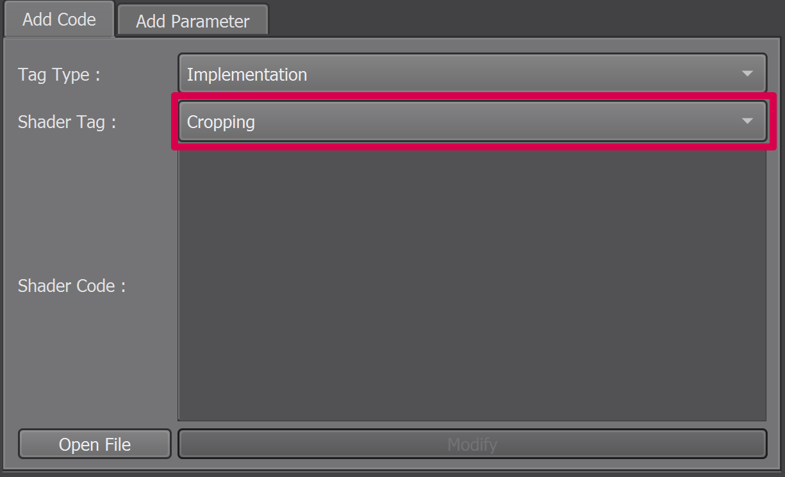
To add the code you can either :

- Enter the code in the text area and click on the "Modify" button.
- Click on the "Open File" button to enter the code directly in the python file.
- Repeat steps 1-3 for each wanted code replacement.
Panels and their use
|  |
| 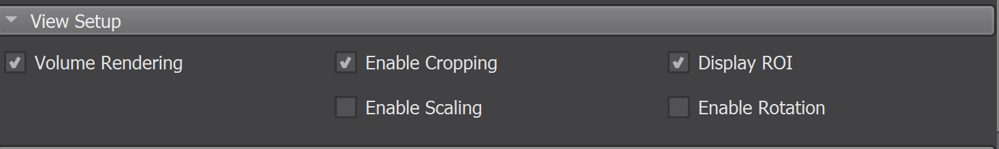 |
|  |
|  |
 | |
 |

Similar Modules
References
PRISM: An open source framework for the interactive design of GPU volume rendering shaders
Information for Developers
See this page for the full documentation.